Next: Properties of Fourier transforms
Up: Fourier analysis of periodic
Previous: Periodicity of the Fourier
Contents
Index
Fourier transform as additive synthesis
Now consider an arbitrary signal ![$X[n]$](img669.png) that repeats every
that repeats every  samples. (Previously we
had assumed that could be obtained as a sum of sinusoids, and we haven't
yet found out whether every periodic can be obtained that way.) Let
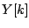 denote the Fourier transform of
samples. (Previously we
had assumed that could be obtained as a sum of sinusoids, and we haven't
yet found out whether every periodic can be obtained that way.) Let
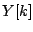 denote the Fourier transform of  for
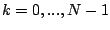:
for
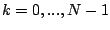:
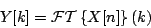
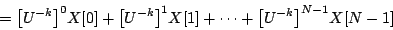
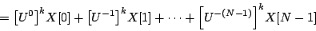
In the second version we rearranged the exponents to show that is a sum
of complex sinusoids, with complex amplitudes ![$X[m]$](img1067.png) and frequencies 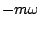
for
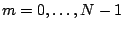. In other words, can be considered as a
Fourier series in its own right, whose
and frequencies 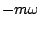
for
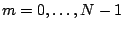. In other words, can be considered as a
Fourier series in its own right, whose  th component has strength 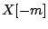.
(The expression makes sense because is a periodic signal).
We can also express the amplitude of the partials of in terms of its own
Fourier transform. Equating the two gives:
th component has strength 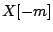.
(The expression makes sense because is a periodic signal).
We can also express the amplitude of the partials of in terms of its own
Fourier transform. Equating the two gives:
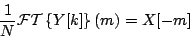
This means in turn that can be obtained by summing sinusoids with
amplitudes 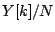. Setting 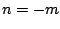 gives:
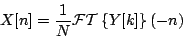
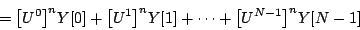
This shows that any periodic can indeed be obtained as a sum of
sinusoids. Further, the formula explicitly shows how to reconstruct
from its Fourier transform , if we know its value for the integers
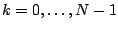.
Next: Properties of Fourier transforms
Up: Fourier analysis of periodic
Previous: Periodicity of the Fourier
Contents
Index
Miller Puckette
2006-12-30